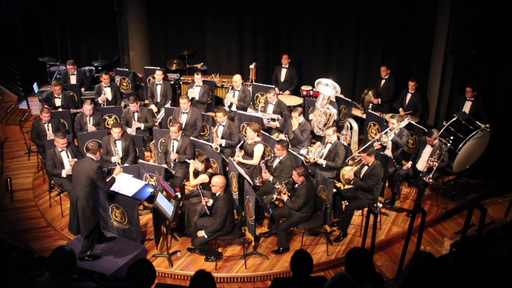

San Antonio, el mayor puerto de Chile
Ver más fotos y videos
Ver más fotos y videos
Comprometidos con nuestros vecinos, el medio ambiente y el desarrollo sustentable de nuestra comuna
 |
 | |
Estudio de avifauna en las lagunas de Llolleo y la desembocadura del río Maipo |
Paseo Bellamar, principal atractivo turístico del borde costero |
Organización y apoyo en actividades culturales de relevancia en nuestra comuna |
Visita también nuestras iniciativas digitales
minisitios para niños y escolares san antonio y paseo bellamar
18 de enero
Además, durante 2017, los concesionarios del puerto movilizaron casi 1.296.890 contenedores
continuar leyendo
En Puerto San Antonio (17/02/19), el Crucero Seven Seas Explorer, de 224 metros eslora y bandera de Islas Marshall, se encuentra desde ayer en el concesionario Puerto Central, con Zarpe programado para hoy a las 18 Hrs. #SanAntonio #ElPuertodeChile
Fotos: @RubenJeriaH
#cruceros #verano #Chile #cruiseship #port #cruises
Siguenos también en: @puertosantonio puertosantonio